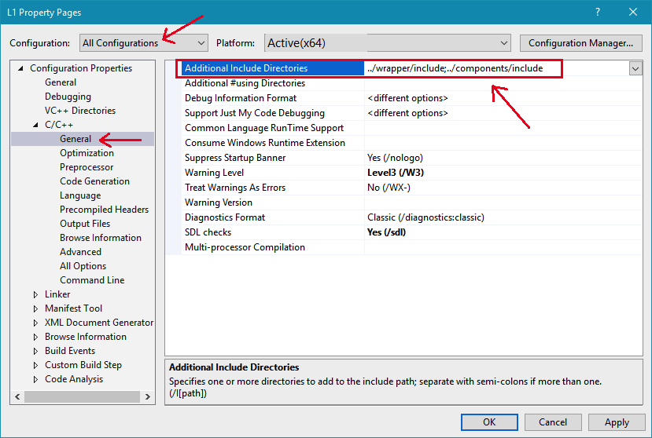
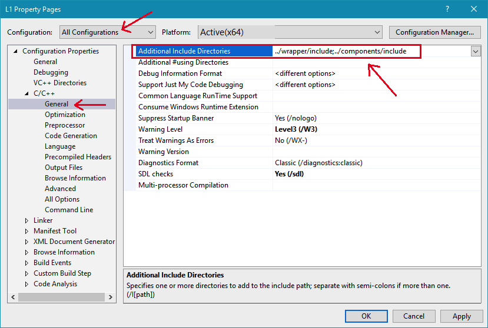

From the Property Pages dialog make the following change
You can copy and paste this path for Additional Include Directories: ../wrapper/include;../components/include

Each time a new project is created, you must change its specific settings. You only need to do this once for each project you create. Failure to successfully change the settings will usually cause millions of compiler errors to be generated.
To change a project's settings, do the following:
| From Visual Studio Solution Explorer, with your project open, right click L1 (or LX, depending on the project - See the screen shot to the right) and from the context menu choose Properties, this will cause the "Property Pages" dialog to appear. | |
From the Property Pages dialog make the following change You can copy and paste this path for Additional Include Directories: 
|
|